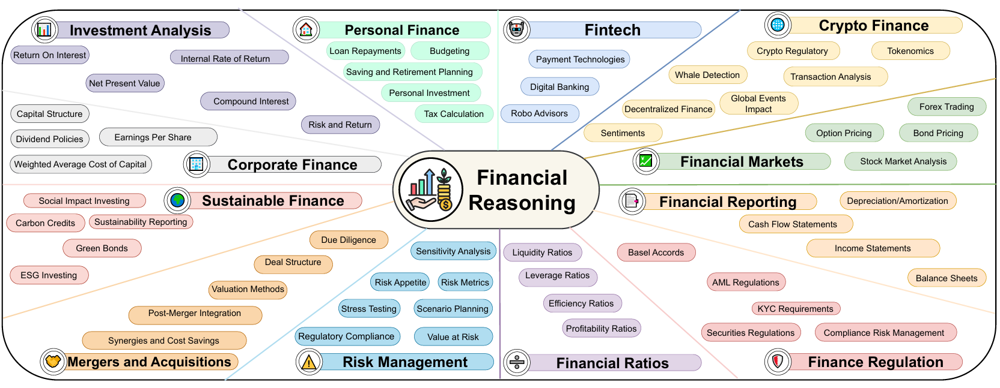
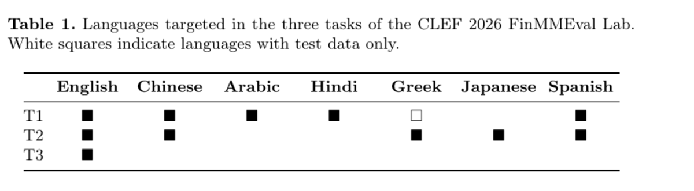
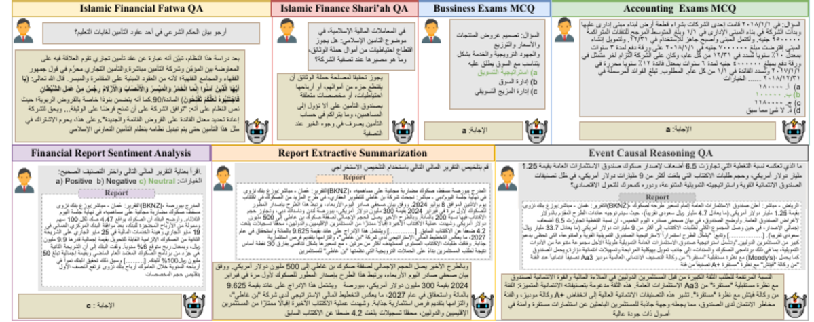
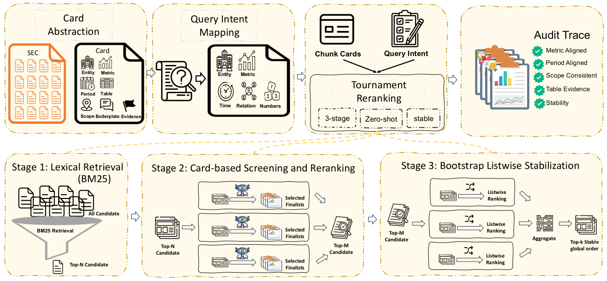
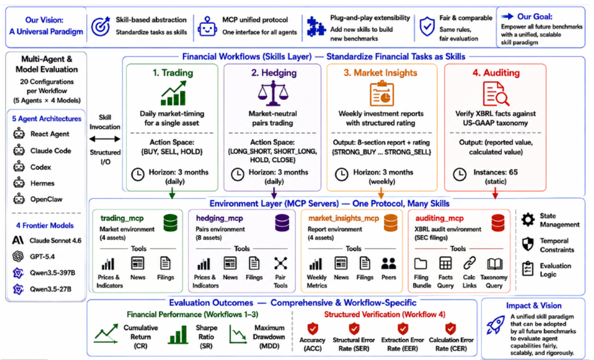

Verifiable reasoning under financial constraints
Can models produce financial reasoning that is not only fluent, but auditable?
FinChain, SAHM, and normative finance reasoning.
About
I am a postdoctoral associate at Mohamed bin Zayed University of Artificial Intelligence. I study whether language and agent systems can make reliable, evidence-grounded, and auditable decisions in high-stakes settings. Finance is my main testbed, but the broader goal is to understand how domain reasoning fails when models must follow rules, preserve evidence, manage risk, and act over time.
Research
The program is not only about building finance datasets. I use finance as a pressure test for domain intelligence: models must justify their reasoning, cite decisive evidence, respect financial and regulatory constraints, and remain stable as agents.
The public anchors are FinChain, FinMMEval, and Herculean: a verifiable reasoning benchmark, a community evaluation lab, and an agentic financial intelligence benchmark. Surrounding projects extend these anchors into documents, reporting, recommendation, regional finance, and decision protocols.
Can models produce financial reasoning that is not only fluent, but auditable?
FinChain, SAHM, and normative finance reasoning.
Can models retrieve, rank, and preserve financially decisive evidence?
FinCARDS, FinReporting, RealFin, Conv-FinRe, and document-grounded evaluation.
Can agents execute multi-step financial decisions under risk, memory, and operational constraints?
Herculean, FinMMEval Task 3, and longitudinal agent reliability.
How can individual papers become a reusable evaluation ecosystem?
FinMMEval, leaderboards, baselines, working notes, and competition-style assets.
Collaboration
Open to focused collaborations that turn evaluation ideas into reusable public assets:
Symbolic templates, executable checks, domain constraints, and metrics that expose reasoning failures.
Decision workflows, paper-trading windows, mandate drift, memory lock-in, and risk-aware diagnostics.
Lab-style evaluation with participant systems, final-test portals, leaderboards, and working notes.
Document QA, analyst reranking, reporting agents, recommendation, and grounded evaluation for finance.
News
Selected Publications

ACL 2026 Main · Oral
A symbolic benchmark for verifiable chain-of-thought financial reasoning, designed to expose whether models can follow auditable financial logic.


ACL 2026 Main · Oral
A benchmark for Arabic financial and Shari'ah-compliant reasoning across linguistic and domain-specific constraints.


Portfolio
Each project is positioned as either a flagship anchor, a supporting asset, or an infrastructure component. The goal is cumulative ownership of a research line, not a loose pile of finance papers.
Publications
Other Work
Earlier work in fact-checking, evidence retrieval, and text generation/evaluation supplies the broader trustworthy-AI foundation behind the finance program.
Mentoring
I work closely with students and early-stage collaborators from problem framing to benchmark design, experiments, writing, rebuttal strategy, and release planning.
Community Service
I contribute to evaluation communities as a shared-task organizer and reviewer for NLP, machine learning, and trustworthy AI venues.
Lab organizer for multilingual and multimodal evaluation of AI systems in finance, covering participant communication, final-test portals, leaderboards, and working-note coordination.
Task organizer for SemEval 2025 Task 10, handling participant communication, submission checks, camera-ready preparation, and citation coordination.
Contributions to shared tasks and overview papers on authorship verification and multimodal reasoning challenges.
Served on the SemEval 2027 task-proposal review committee; reviewed for ACL Rolling Review, NeurIPS, COLM, EMNLP, ALTA, CHOMPS, TFAI, and MisD.